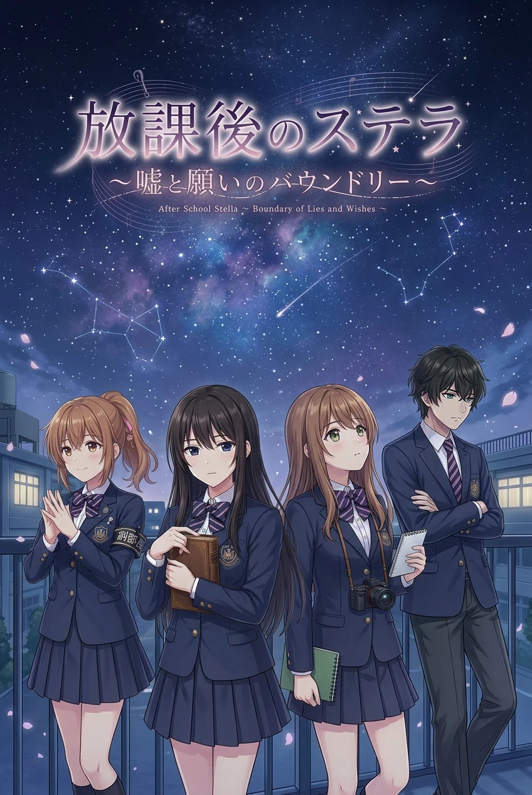
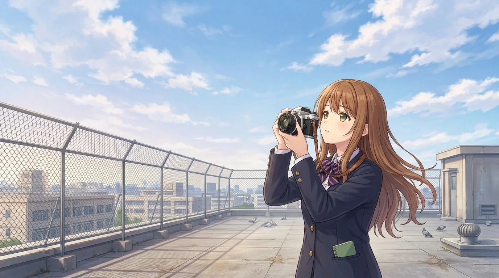

이야기를 키우다.
AI와 줄거리와 대사를 다듬고 인물다운 말로 고쳐 썼습니다. 선택지 너머의 마음까지 하나하나 되짚었습니다.
STORY & DIALOGUEONE CREATOR, WITH AI.
만들고 싶은 이야기가 있었습니다. 그래서 매일의 틈새 시간에 AI와 함께 만들었습니다. 혼자 제작한 연애 어드벤처.
끝까지 무료 / 설치 불필요 / 전체 이용가 / 다국어 음성

01 / BEHIND THE SCENES
AI와 의논하고 시험해 보고 직접 확인하며 다시 고칩니다. 그런 대화를 반복해 이야기를 플레이할 수 있는 형태로 만들었습니다.
AI와 줄거리와 대사를 다듬고 인물다운 말로 고쳐 썼습니다. 선택지 너머의 마음까지 하나하나 되짚었습니다.
STORY & DIALOGUEAI로 캐릭터 이미지와 풍경을 만들고 그림체·표정·구도를 조정했습니다. 본편 장면에 어울릴 때까지 다시 골랐습니다.
ART & DIRECTION저장과 분기가 있는 본편부터 오프닝의 카메라 연출까지 AI와 구현했습니다. 직접 실행하며 발견한 어색함을 끝까지 고쳤습니다.
CODE & MOTION어떤 작품을 만들지, 무엇을 남길지 결정하는 건 제작자입니다. AI와 시도할 수 있는 일을 넓히며 완성해 가는 방식입니다.
시나리오 개고와 오프닝은 ChatGpt-6, 음성 제작은 ElevenLabs를 사용했습니다. 주인공 외 모든 대사에 음성을 넣고 코토하는 Leira의 절제된 연기로 갱신했습니다.
02 / SEE WHAT WE MADE
완성판 오프닝 / 약 1분 43초
한 장의 그림에 깊이와 빛, 카메라 움직임을 더했습니다. 스토리보드부터 여러 번 조정한 주제가 오프닝입니다.
STILLS + CODE + DIRECTION03 / YOUR AFTER SCHOOL
방과 후의 스텔라: 거짓과 소원의 경계
무대는 평범한 학교와 방과 후. 세 소녀의 미소와 침묵에 숨은 진심을 당신의 선택으로 따라가는 연애 어드벤처입니다.

늘 밝게 웃는 사쿠라. 그 미소 안쪽의 마음을 알아갑니다.
VOICE / Suzu

조용한 시간과 음악을 소중히 여기는 코토하. 말로 다 하지 못한 마음에 다가갑니다.
VOICE / Leira

카메라와 공책을 놓지 않는 소꿉친구 마히루. 남기고 싶은 시간을 함께 찾습니다.
VOICE / Yuki
MADE IN SPARE MOMENTS. READY FOR YOURS.
한 사람과 AI가 어디까지 만들 수 있었을까요. 이야기 속에서 그 답을 확인해 보세요.
무료로 플레이하기끝까지 무료·전체 이용가 / 소리가 재생됩니다 / 스마트폰 가로 모드 권장